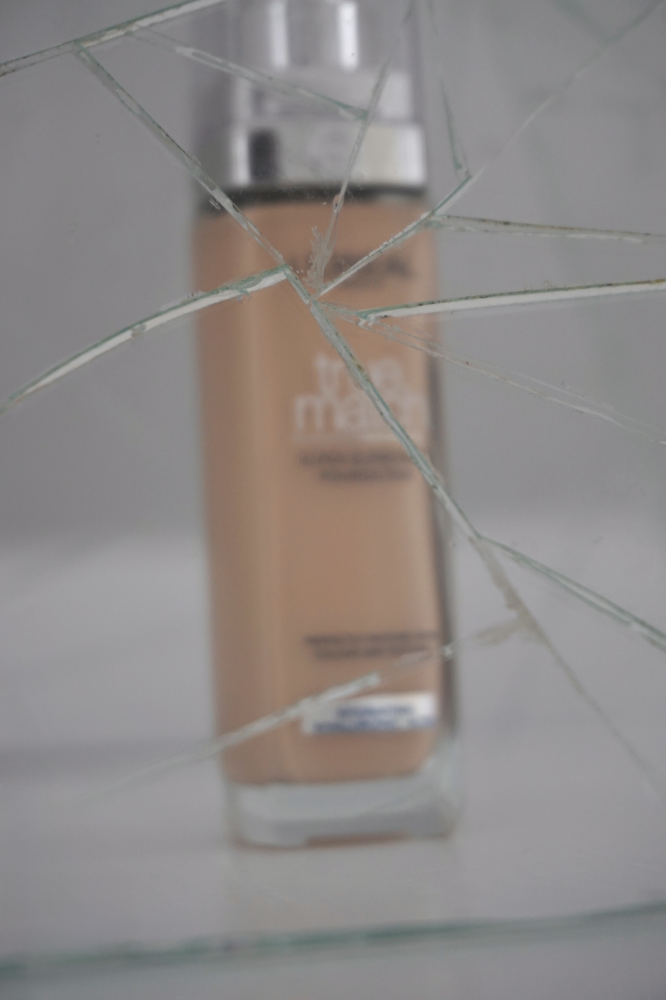
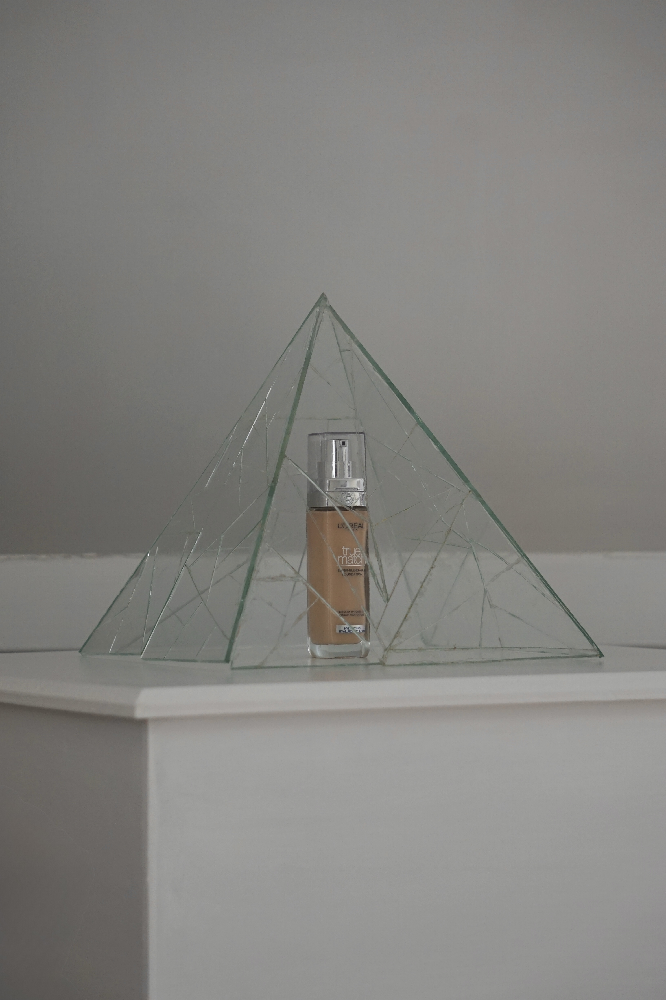
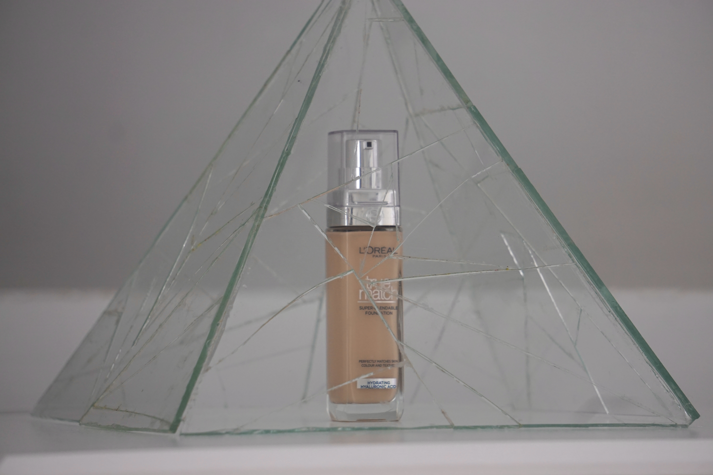

Cosmeticaproducten worden dagelijks gebruikt en gepresenteerd als transparant en verzorgend. De ingrediënten met de positiefste invloed op de huid worden vaak groot op de verpakking geplaatst, om te laten zien dat er “goede” ingrediënten in het product zitten. Dit is echter maar een klein deel van wat er daadwerkelijk in zo’n flesje zit. Veel andere ingrediënten kunnen de huid uitdrogen, puisten veroorzaken of zelfs de hormoonbalans verstoren. Hoewel al deze ingrediënten op de achterkant van de verpakking vermeld staan, begrijpen veel consumenten nauwelijks wat ze zijn of wat ze doen.
Dit project verbeeldt de spanning tussen transparantie, vertrouwen en begrijpelijkheid binnen de cosmeticawereld. Het is geen verwijt dat mensen geen make-up zouden moeten dragen, maar een poging om bewustwording te creëren. Ik hoop mensen aan te zetten om meer onderzoek te doen naar wat zij dagelijks smeren op het grootste orgaan dat we bezitten: de huid.

“Weet jij eigenlijk welIngrediëntenlijsten →
wat er in jouw make-up zit?”
Voor deze installatie is gekozen voor glas, een materiaal dat normaal gesproken transparantie en helderheid symboliseert. Door dat het glas gebroken is moet je beter je best doen om te kijken wat er nou echt in zit. Een perfect symbool voor hoe de cosmetica-industrie er nu uitziet.
Op deze manier vormt het materiaal een symbolische vertaling van de manier waarop transparantie binnen de cosmetica-industrie vaak wordt ervaren: zichtbaar, maar niet altijd makkelijk te begrijpen.


